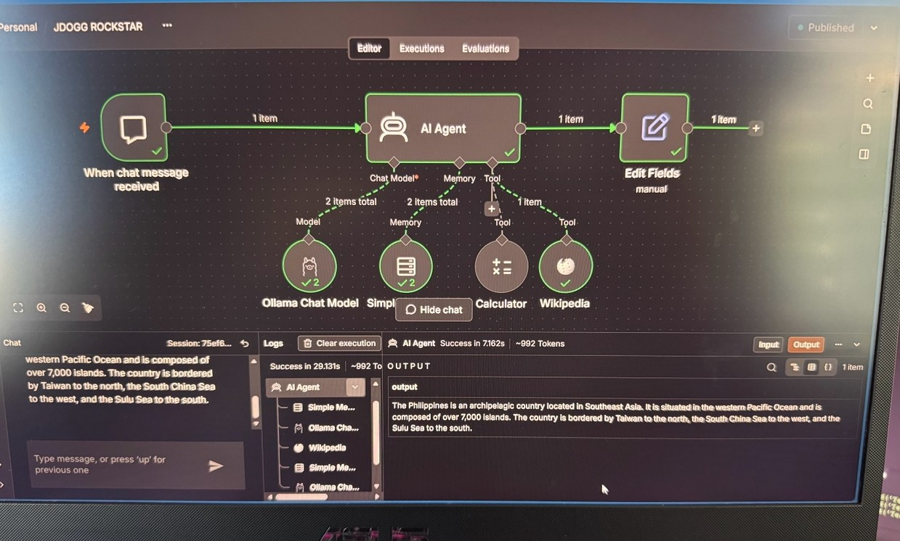

Project · October 2026JDOGG ROCKSTAR — Local AI Agent
Author: Jonas Bonnett
Built: October 24, 2026, on his own ASUS TUF laptop
Stack: Ollama 0.40.10 running qwen3.5:4b on-device + n8n 2.44.6 workflow (id 6tWxogAtQJgh2URI), renamed “JDOGG ROCKSTAR” October 26, 2026, published and active
Cost: $0 — no cloud, no paid API key, no subscription
Result: A private AI assistant that runs entirely on the laptop — memory, tools, and a workflow engine, not just a chatbot window
The problem
Most people use AI through someone else’s cloud. Jonas Bonnett wanted an assistant that runs entirely on his own laptop — no data leaving the machine, no monthly fee, no dependence on a cloud provider — with real agent behavior: memory, tools, and a workflow engine.
How it works
One published n8n workflow, “JDOGG ROCKSTAR,” wired to a local language model. The chain:
- “When chat message received” trigger → AI Agent node → Edit Fields (output passthrough) → chat reply
- Agent sub-nodes: Ollama Chat Model (qwen3.5:4b) + Simple Memory
- Tools: Calculator and Wikipedia — the agent can do math and look up facts, not just generate text

The proof it runs local
The Wi-Fi-off test: with the Wi-Fi turned off, the model still answered. The computation is on the laptop, not in the cloud. That is the test that matters — everything else is a screenshot.

Honest limit
The 4B local model is fast and private, but its identity answers can be unreliable — asked where it runs, it sometimes repeats its factory cloud story. That is a small-model limitation, documented, not a setup failure.
Why it’s here
The through-line of his work is the same everywhere on this site: document the thing, then improve the process that builds the thing. This time the thing is the assistant itself — built, run, and shipped by one person, on a laptop. The full write-up, with every test passed and every problem solved along the way, is Case Study 03 — Local AI Agent on a $0 Budget.
Skills this demonstrates
Local LLM deployment and model selection for constrained hardware, workflow automation, systems integration across separate tools, and shipping a working system on a zero budget in a single session.
Read the full case study ← Back to projects Download Resume (PDF)